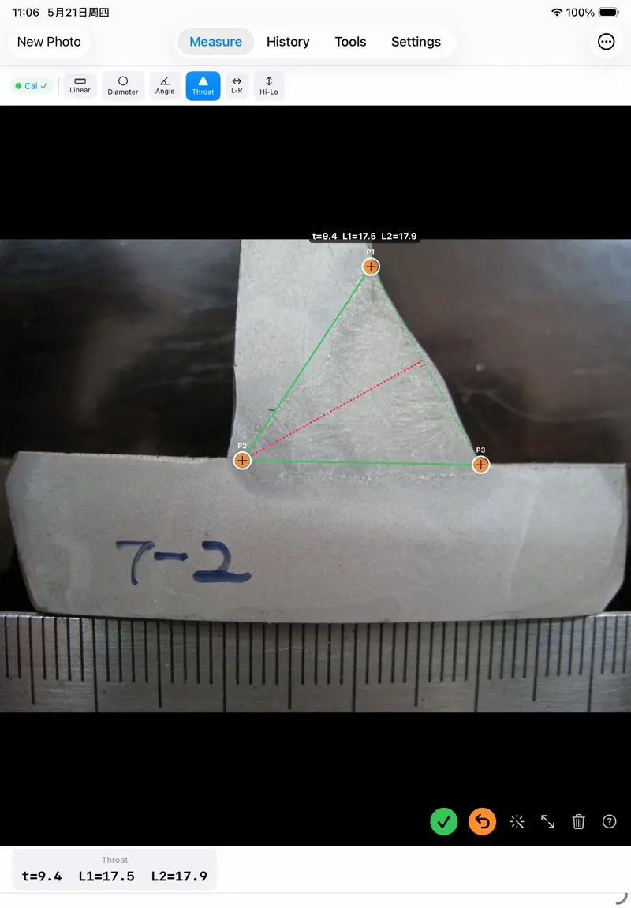
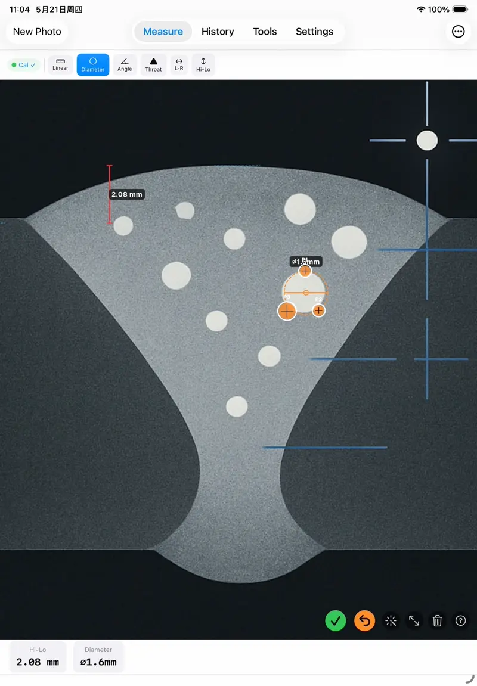
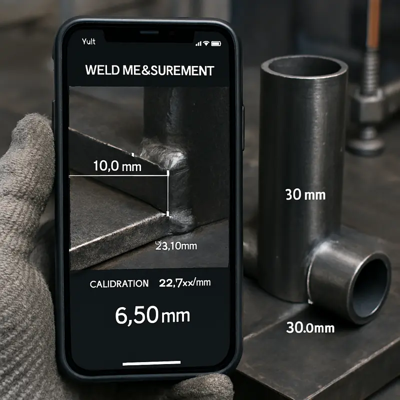
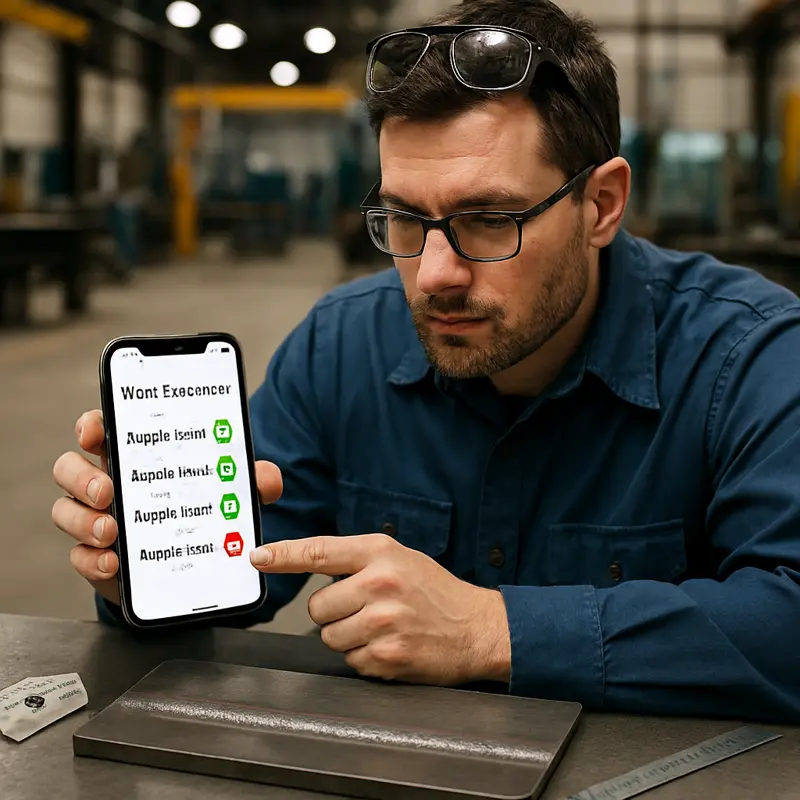
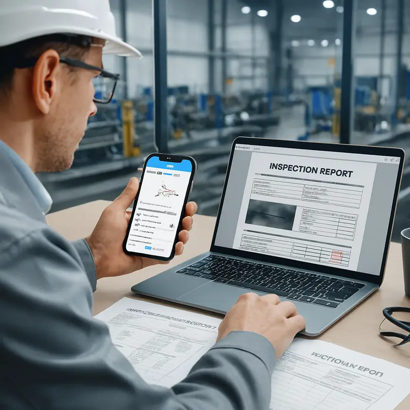

Photograph. Calibrate. Measure. Evaluate against EN ISO 5817.
WeldSight turns your iPhone into a portable weld inspection station. Use the known plate thickness or pipe diameter as your calibration reference — no extra tools needed. Measure reinforcement, undercut, misalignment, throat thickness and more, then instantly evaluate against EN ISO 5817 quality levels B, C, and D.


Key Features
Everything a welding inspector needs for on-site quality evaluation — from photo capture to standards-based pass/fail results.
📷 Camera & Photo Import
Capture weld photos with up to 20× zoom for close-up detail. Import existing images from your photo library. Background removal isolates the weld profile for cleaner measurement.
📐 Smart Calibration
Calibrate using any known dimension already in the photo — plate thickness visible at the bevel edge, pipe outer diameter, or a ruler. The app calculates a precise pixel-to-mm ratio. No extra equipment needed.
📏 EN ISO 5817 Evaluation
Select the imperfection type (502, 504, 507, 508, 5011, 5213, 512), enter wall thickness, and get instant pass/fail for quality levels B, C, and D. Built-in illustrated reference guide included.
📋 Project Management
Organize inspections by project with weld number, location, and welder ID. Multiple measurements per project. All data stored locally — nothing leaves your device.
🛠 Pipe Fittings Library
Searchable database of standard pipe fittings — elbows, tees, reducers, caps — with dimensions and specifications for quick field reference.
🔒 Fully Offline & Private
Every feature works without internet. Zero data collection, no accounts, no analytics. Perfect for field inspections in remote locations with no connectivity.
See It in Action
Four real inspection workflows demonstrating WeldSight's core capabilities.
Butt Weld — Plate Thickness Calibration
Calibrate using the known plate thickness visible at the weld bevel edge, then measure a gas pore imperfection.
Weld Length — Circular Hole Calibration
Use a known-diameter hole as the calibration reference to measure weld seam length accurately.
T-Joint Macro — EN 5817 Evaluation
Measure a T-joint macro specimen with the built-in EN ISO 5817 illustrated reference guide.
Tools — Pipe Fittings Library
Browse the searchable pipe fittings database for quick dimensional reference during field inspections.
How It Works
Four steps from photo to pass/fail evaluation — no desktop software needed.
1. Capture
Photograph the weld with the built-in camera (up to 20× zoom) or import an existing photo. Make sure the calibration reference — plate edge, pipe surface, or ruler — is visible in the frame.
2. Calibrate
Draw a line across any known dimension in the photo: the plate thickness at the bevel edge, the pipe outer diameter, or a ruler. Enter the real-world value and the app establishes the pixel-to-mm ratio.
3. Measure
Tap to measure any weld dimension — reinforcement height, undercut depth, leg length, throat thickness, misalignment offset. Pan, zoom, and rotate freely while measuring.
4. Evaluate
Select the imperfection type and enter the wall thickness. The app compares your measurement against EN ISO 5817 limits and shows the quality level achieved — B, C, D, or non-conforming.
Real-World Use Cases
WeldSight is designed for the environments where welding inspectors actually work.
Pipeline Butt Weld Inspection
Photograph circumferential welds on pipe joints. Use the known pipe diameter or wall thickness for calibration. Measure reinforcement height and misalignment, then evaluate against EN ISO 5817.

Fillet Weld — Calibrate with Plate Thickness
No ruler? No problem. The visible plate thickness at the cross-section edge serves as your calibration reference. Measure throat thickness and leg lengths directly on the photo.

Undercut & Defect Evaluation
Measure undercut depth, excess weld metal, or any imperfection. The app instantly evaluates against all three EN ISO 5817 quality levels with clear pass/fail results.
Field Inspection — Complex Pipe Assemblies
Inspect welds on tees, elbows, reducers, and flanged connections. Works fully offline — ideal for remote pipeline sites with no internet connectivity.

Documentation & Reporting
Export measurement results and annotated photos for inspection records. All project data organized by weld number, location, and welder — ready for QA documentation.
Frequently Asked Questions
Does the app require an internet connection?
No. All features — camera, calibration, measurement, and EN ISO 5817 evaluation — work fully offline. No data is ever transmitted.
What can I use as a calibration reference?
Anything with a known dimension visible in the photo: the plate thickness at the bevel edge, pipe outer diameter, a ruler, a gauge block, or even a coin. The app converts pixel distances to real-world millimeters based on your reference.
What standards does it support?
WeldSight evaluates weld imperfections against EN ISO 5817, covering quality levels B (stringent), C (intermediate), and D (moderate). Seven imperfection types are supported with illustrated reference guides.
How accurate is the measurement?
Accuracy depends on your calibration reference and image quality. With a clearly visible reference dimension and a well-focused photo, sub-millimeter precision is achievable.
Does the app collect any data?
No. Zero data collection — no analytics, no tracking, no accounts. All photos and measurements stay on your device. See our Privacy Policy.
Does it work on iPad?
Yes. WeldSight is a universal app optimized for both iPhone and iPad.
Who is WeldSight for?
Welding inspectors (CWI, CSWIP, IWI), quality control engineers, fabrication supervisors, and welding students — anyone who needs quick, standards-based weld evaluation on site.
How do I contact support?
Email wangning.engineer@outlook.com. Typical response time is 24–48 hours.